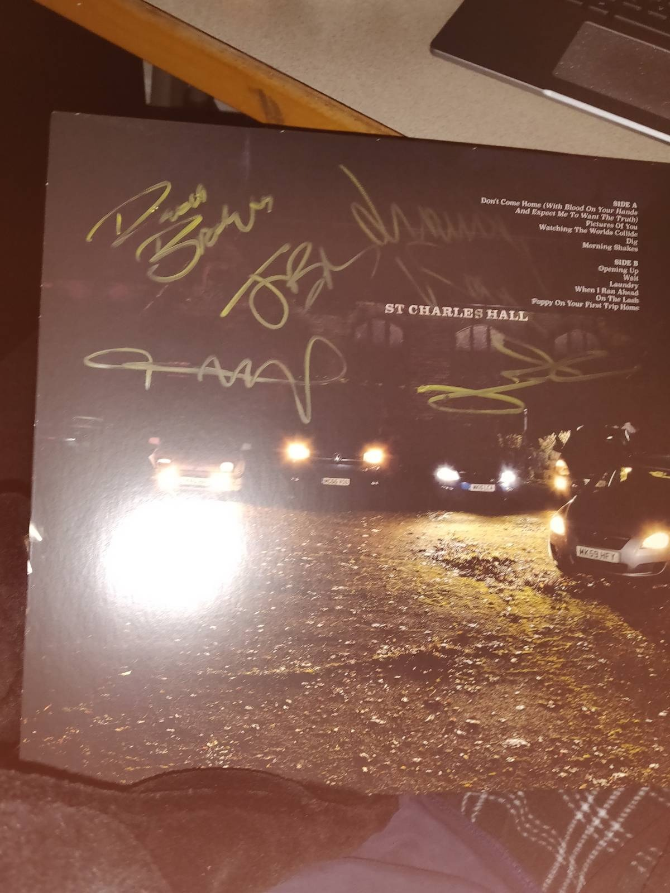
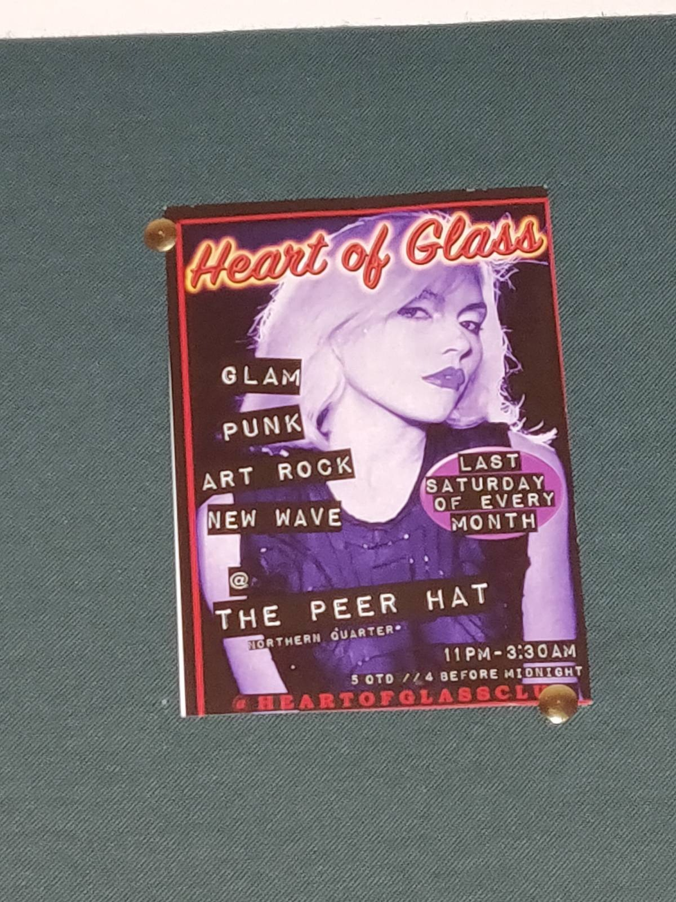
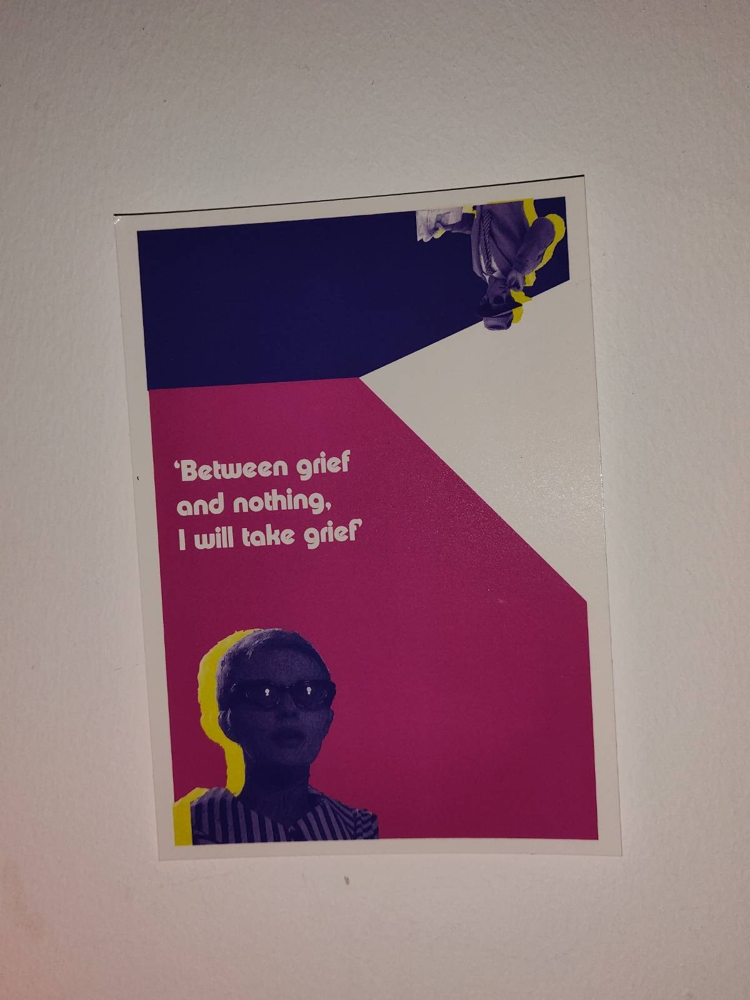
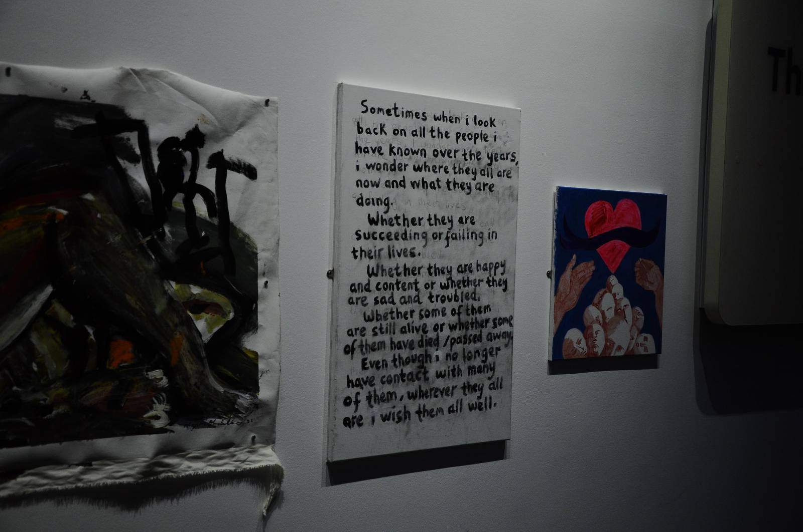
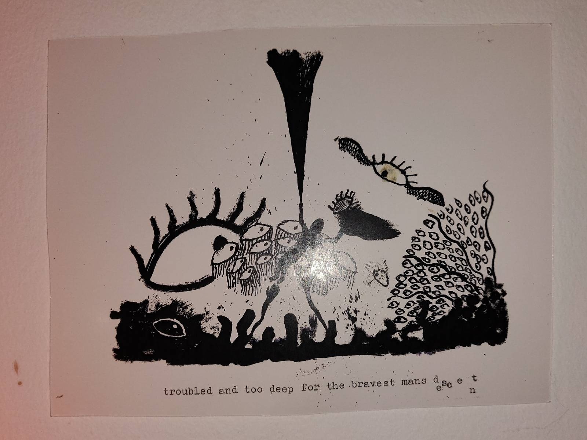

Arron Ware's Journal
[ morewebsitesaboutbuildingsandfood.com ]
^
Had my first proper day of Uni today, had 3 artists come in to do a gig for us. One was called Rasheed and did a modular synth performance,
a DJ who used vinyl to create 'Jungle House music' not really my sort of thing and lastly we had one of our teachers
with his bandmate play an electronica gig which was intruiging. The teacher who played the gig was also from Lincolnshire, Louth specifically.
On the very first day when we were doing introductions whenever someone said they were from Lincolnshire there was always someone turning round
to give them a thumbs up or a cheer. It's surprising, nearly everyone I approach or get chatting to is from or has close relations to someone
in Lincolnshire, I'm beginning to think that there's more people from Lincolnshire in Manchester than Lincolnshire itself.
Stop Showing Up
29/09/22
Had my first proper day of Uni today, had 3 artists come in to do a gig for us. One was called Rasheed and did a modular synth performance,
a DJ who used vinyl to create 'Jungle House music' not really my sort of thing and lastly we had one of our teachers
with his bandmate play an electronica gig which was intruiging. The teacher who played the gig was also from Lincolnshire, Louth specifically.
On the very first day when we were doing introductions whenever someone said they were from Lincolnshire there was always someone turning round
to give them a thumbs up or a cheer. It's surprising, nearly everyone I approach or get chatting to is from or has close relations to someone
in Lincolnshire, I'm beginning to think that there's more people from Lincolnshire in Manchester than Lincolnshire itself.
I also joined the Film Society yesterday! Went to the taster day and met some interesting people, only £4 for the whole year and that gets you discounts to
larger events like Grimmfest that's coming up in a few days, that's at the HOME cinema and they show tons of independant film alongside
reshowing some classics like The Thing. Really looking forward to getting involved with that, they're showing the Gremlins next Wednesday
so that should be good fun, haven't seen that in ages.
Been looking forward to seeing Stop Making Sense (Talking Heads' big concert film directed by
the famous Jonothan Demm, who also did Silence Of The Lambs!) at Aatma, another indie venue which took some finding
out to know that it's above The Peer Hat and that you have to go through an alleyway behind it to get up the stairs into it.
Anyways I'd been looking forward to hearing Stop Making Sense on a proper sound system and enjoying it with other people,
so I turned up 15 mins early to ensure that I didn't miss it but after standing about in the venue one of the guys
who works there came up to tell us that it had been cancelled and that the organisers emailed 3 hours prior,
they apologised and I helped them pack the chairs away.
So, I thought, might as well pop down to The Peer Hat and see what's on,
got there and the bar tender said that there were a few bands playing tonight but that they were still doing the soundcheck,
I thought I've not got anything better to do so I sat through the soundcheck. The entry fee was an optional donation so I just popped a pound in.
Once the soundcheck finished and the bands started they were really good, the resident audio engineer working at The Peer Hat, Matt,
always wears a Ushanka which never fails to amuse me.
I ended up buying the record that one of the performing acts were selling,
they were called Rook And The Ravens (The other acts were Letters To Frances who did a sort of traditional native american influenced
guitar ballad similar to 'Quiet Sun' by Death Hawks but the first act and guy who organised it was by Dave AKA Sky Burials who was
a sort of vocal pop artist who played piano and guitar) the guys from Rook got the crowd going and were great fun to listen to with lots of folky
influenced rock (And lots of organ which I love!), anyways they were kind enough to sign the record for me which was nice.
Lovely atmosphere in The Peer hat when you get a few bands on the bill, they always hang about to see each other play, which is nice to see.

^
Been caught up in the change of lifestyle that I've forgotten to keep this updated rip.
In The Biiig Biiig City, So Much Larger Than life.
19-28/09/22
Been caught up in the change of lifestyle that I've forgotten to keep this updated rip.
The move-in went well, flatmates are sound, the bed is comfy and the increase in space is welcomed.
Brought most of my HiFi so that's pretty nice and helps it feel like a home.
The cloud server I set up has proved to be invaluable mainly for it's calendar which
I've set to integrate itself with my University timetable site, making organisation way easier and cohesive
(Although it will never stop me buying physical calendars for the artwork)
I've met all sorts of interesting people here like Mark, my buddy from the Heart Of Glass Club which is a DJ
set that plays New Wave, Synth-Pop and Glam (Right up my alley), we got talking about film scores for a while after I commented on his Mark E Smith shirt then we went down into the
basement of The Peer Hat, was a bit nervous at first but I got into the groove of things and it turns out
I'm a really good dancer, not to pat myself on the back or anything :)

The Peer Hat, the venue of HOG and also what I didn't know is the epicentre of the local music scene.

On my second or third day here I went to Vue Printworks to see the new David Bowie documentary (which was phenominal) and got chatting to Eric and
his wife since I got there early, they were both in their late 50s/60s and were big Bowie fans, even went to see him a few times. We had a great
conversation about Bowie, our favourite eras of his stuff, who he worked with and our thoughts on his albums and IMAX cinemas, we
watched the film on an IMAX and I've never even seen an IMAX screen before let alone watched a film that I've been excited to see for this
long on it, Eric was saying it's a completely different viewing experience and he was right, even just looking down to the bottom of the screen
from the walkway is like looking down from a two story building, the big screen paired with a fab soundsystem really made the viewing experience
one to remember, no form of home viewing will be able to replicate that experience. I was going to save the ticket as a keep sake
but I've put it down in my flat and it's been about a week and I still havent figured out it's where abouts.
I met Steve Timms, a Pop artist working in the HOME cinema, he makes Pop Art and he gave me a postcard! he was a bit introverted but we got talking about
art after I asked what he was reading, i mentioned id just been upstairs with my camera (D90) to take a photo of some art which was on display (you can view it below!)


[image i took of some art i liked at the HOME cinema art gallery]
I met Ollie working a cafe in Afflecks called "Ginger's", I walked in and noticed that I recognised the music,
I sat there just listening only to realise that it was Not In Love by Talking Heads, I mentioned that I liked the music
and he said he noticed the T-Shirt (Talking Heads shirt), we got talking and he said that he just stuck whatever he wanted on,
he just happened to be listening to Talking Heads' entire discography that day (I can't imagine Speaking In Tongues makes good cafe music but power to him).
After ordering a double Vanilla ice cream I mentioned that I was doing some promotion for Heart Of Glass and that with his music taste it might be something
he'd be interested in;
He said he knows The Peer Hat and that it's the finest venue in the city for local stuff, then he mentioned that he plays
in a band and that they'll be performing there later that day at 7PM, I asked him what he played and what sort of music they do and he said they #
always change instruments to keep things sounding fresh. He then proceeded to show me a big suitcase with tons of shit in it but also a Korg Micrologue,
I jokingly asked if he was living in the shop. Gary Fisher also dropped by to speak to Ollie (both members of Rodney), we introduced ourselves and shook hands,
said I was coming to the gig later that night and it was very intruiging.
There was also another band meant to be playing but they were unable to so Reuben
(the bartender working at The Peer Hat with the tinfoil hat, is that the peer hat???) hosted a jam sessions letting people use the instruments
that were set up on stage, I shyed away from the vocals at first after being asked up (I was putting my drink on the table admittedly)
but after he was looking for someone else to play an intrument I presented myself and was surprisingly comfortable on stage
(no longer sweating buckets as per usual, although I was wearing my uber cool converse sunglasses), when I got on stage
i reached for the first thing I saw, the bass guitar, always been shit at normal guitar and the bass is no different, however, this time I was at the gig with my
hearing protection (after being absolutely thrashed at Heart Of Glass a few days prior, which might I add, I had an absolute blast at) meaning that I could barely hear myself play.
So there I was,
playing bass guitar on stage for the first time, with people who were also playing instruments for the first time,
that was pretty fun and a good laugh for all of us.
Then after a few acts Rodney came on, Ollie sounded like Jim Morrison, Gary Fisher sounded like David Firth (voice actor of Salad Fingers) both with lyrics that
sounded like they were stolen from Mark E Smith, the whole thing was bizzarre, unique and interesting. I loved it. I spoke to Ollie and Gary afterwards, Gary was saying that
they've written about 60 songs but only recorded 3 or so because they write new stuff for each gig and to them it's more about the performance which is pretty respectable,
if not a little disappointing. They also had a Casio PT-30 from 1983 that played the backing synth track to Cameron (I DRINK ALL THA TIME, AND YOUU CAN'TT STOPP MEEHHHH)
I loved the janky, monophonic sequenced backing track so much that I went on eBay later that night and bought one for myself
(as of 30/9/22 it still hasn't arrived but I'm looking forward to tinkering with it)
At the Rodney gig there was also a couple of mini art stalls, bought some art from someone around my age named Conor, you can find a picture below,
I quite liked the look of it.

I also met George and Frank two ex students who work at the same place, George working the bar at Another Heart To Feed whilst
Frank wasn't working but was hanging out with George on his late shift playing Chess. I was going to go for a pint (of water) at
The Peer Hat since I had nothing better to do but it ended up being shut so I biked up to Matt n Phreds to see how that was and wasn't a huge fan so,
riddled with cold and lacking any tissues, I went in search of a restaurant or bar that I would feel comfortable asking for a tissue in,
eventually after some hesitation and a small donation to a homeless fella, he pointed me to ANHTF after asking if I was lost, saying
"Ahh yeee, they'll sort ya out sonn".
So I went in and we got talking, Frank (who didn't look very much like a Frank) was playing Mini Metro on his Macbook,
I thought I might as well sit down since I'll only be going back to my accomodation, it turns out he studies Journalism and actually
writes for a local newspaper whilst George studied mechanical engineering, we got talking about drinks and I mentioned how I just don't really like the taste
of alcohol, they offered me a martini on the house but they didn't have any ice however they said a Coke and Vodka would suit me right, and it was alright.
I don't think I'd go out of my way to drink it but I'm thankful for the experience and they made my night a lot more memorable. Me and Frank also got talking
about my websites after mentioning that I'm studying music but I did computing before, so I showed him my Photography portfolio, said I definitely ought to keep
the web dev up as it's a good skill to have and can provide me with a steady job which is good advice.

^
Felt like making something, just passed my driving test today so I'm pretty chuffed with that.